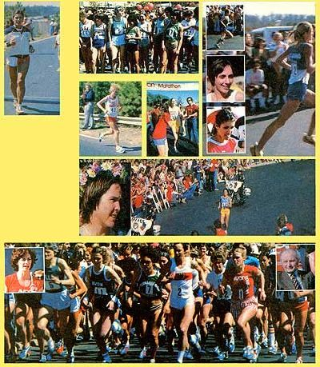

They'd come along way, all right . . . from 29 states and nine different countries . . . to run a long way: 26 miles and 385 yards, to be exact. And, equally important, those 200-plus women who assembled in Atlanta, Georgia on March 19, 1978 did so to make a very positive statement about their right to equal participation in distance running events.
You talk about your doers. You talk about alternatives to the lifestyles so many people-men . . . and women-can't (or won't) break out of. You talk about accomplishing something good for yourself that requires a sense of dedication and determination . . . that'll leave you with a no-nonsense feeling of pride (whether or not you can still stand up when it's over is another matter!) that kind of makes your whole body glow. You're talking marathon.
(Maybe you've never run at all . . . never had a desire to. If that's the case, read . . . Guidelines for Successful logging, pages 46-49 of this issue. It might just change your mind and-at the very least-get you into attempting the basics. And someday-maybe upon maybe-the mystique of the marathon will sneak up on ya!)
The women in these photographs aren't superwomen. They aren't laboratory-raised physiological phenomena. They're people . . . . . . . . . individuals who've found a fitness-addiction that they want to maintain. And-in just about every case-they started as joggers, as women who weren't able to run a mile, much less pace themselves over a hilly, demanding 26-mile-long road course in 75°-80° heat in the company of the world's very best female runners.
Which is exactly what these 225 women were doing in Atlanta at the Avon International Women's Championship Marathon . . . . . . . . . their equivalent of an Olympic marathon. In fact, this is the closest that the females of our species have ever come to such an Olympic race. You see, women aren't allowed to run a marathon in the Olympics. Aren't allowed, in fact, to run any Olympic distance over 1,500 meters.
Any why not? Well . . . as is so often the case for no reasonable reason Bureaucratic mumbo jumbo, essentially, and an incredible series of restrictions based on the archaic opinions of the gray flannel (but dyed-in-the-wool) set on the International Olympic Committee whose dignified but out-of-touch-with-reality membership has already denied women's participation in long distance running events at the 1980 Moscow Olympic Games And-unless something is done-the 1984 Games could easily fall prey to the same tunnel-visioned myopia.
Such "females aren't physiologically capable, etc." attitudes kept women entirely out of long-distance runs until 1967 . . . the year when an assertive young lady-Kathrine Switzer-crashed the prestigious Boston Marathon. (Ms. Switzer jumped onto the course unofficially since she couldn't run officially and-believe it or not-one of the race officials actually attempted to wrestle this "presumptuous female" from the race! He didn't succeed, though, and Kathi kept on going and finished.)
Finally, in 1972- five years after Ms. Switzer had proved that "mere females" could go the distance-Boston officially admitted women to open participation in their 26-miler. (It also should be noted that-by then-several women had actually run faster times than those of some of the 1968 and 1972 male Olympic marathon competitors!) Other race officials have not been so progressive. Right now, for instance-in 1978, eleven years after Kathi Switzer blew 'em away at Boston-women have still not been permitted by the "auspicious" Olympic governing bodies to run in an internationally recognized and sanctioned marathon!
As a result of this flurry of official inactivity, Dr. Ernst von Aaken (renowned West German trainer of distance runners) organized and financed the first ever international marathon competition for women only in 1974 in Waldniel, Germany. It should be noted that Dr. von Aaken paid for the event by using the insurance money he received a year or so earlier in a settlement from an automobile accident. (While on his regular evening run one night, Dr. von Aaken was struck by a car. He lost both legs as a result )
After the successful women-only Waldniel Marathon, the International Olympic Committee and the International Amateur Athletic Federation were once again petitioned to hold an Olympic level event of this nature . . . and they-in their typically Neanderthal fashion-again refused.
Just as predictably, Ernst von Aaken responded by hosting a second ladies-only marathon-this time in 1976-in Waldniel. Once again the women performed flawlessly in a quality race.
That really got the ball rolling . . . and Dr. von Aaken-plus Atlantan Gayle Barron, Kathi Switzer, Olympic competitor Jeff Galloway, and the combined energy of the Atlanta running community-was soon planning a women's marathon for the United States. The project's momentum was soon given an added and most important boost when the Avon company offered to sponsor the race (it always takes money, folks). Thus was the Avon Women's Marathon conceived and nurtured.
The field for the March 19 Atlanta run was-without a doubt-unprecedented in women's athletics. The 225 participants ranged in age from 14 to 52 and represented every level of marathoning experience . . . lots to none! What they all had in common, though, was confidence-in themselves and their ability to perform individually and collectively-and enthusiasm. Their strength showed.
The heat (75° at the start, 80° later) and the hills took their toll. But two hours, 46 minutes, and 16 seconds after the gun went off, Martha Cooksey charged across the finish line. The 23 year-old Californian-apparently-had found the 80° temperature and low humidity to her liking. (Maybe not liking, but she was used to it!)
In second place, with a time of 2:51:40, was 34-year-old Sarolta Monspart of Budapest, Hungary Ms. Monspart was the first competitor from an Eastern Bloc country to compete in a women's distance race in the U.S. As the women fight for Olympic recognition, performances from international competitors like Sarolta are increasingly important.
Finishing only 13 seconds behind the blond Hungarian was Manuella Angenvoorth, 31, of West Germany Manuella ran an incredible race especially since, just a few days before, she'd been in the middle of a rough German winter.
Fourth place went to Cindy Dalrymple of Honolulu who is-like all these women-quite a story. Cindy was a world class track and field competitor in the early 1960's . . . but wanted to run the non-existent (for women) distance events So she gave it all up, went back to school, got married, had two children, and then-in 1973-plunged into distance races. Now, at 36, she's once again world-ranked!
Gayle Barron, the local favorite, had put so much effort into the actual organization of the run that it was surprising she could even walk the 26-mile distance. Still, she finished a very respectable fifth.
So it was a good race. An excellent race. But in terms of Olympic recognition, it's only another step on a long road. What's needed is a concentrated base of public support. That means YOU. Get involved in this thing!
Grab a pen and paper and jot off a . . . demand to know just how soon women's distance (especially marathon) running will be officially sanctioned as Olympic events. Write to: Joel Ferrell, President, Amateur Athletic Union, 3400 W 86th St., Indianapolis, Ind. 46268 . . . Barbara Palm, National Chairperson for Women's Long Distance Running, Amateur Athletic Union (same address) . . . and especially to: Director, International Amateur Athletic Federation, 162 Upper Richmond Rd., Putney, London SW15 2SL, England.
And don't accept a standard "Thank you for your interest, blah, blah" reply. Get these people off their respective bottoms and let 'em know you're not only interested in women's long distance races, but darn upset over official inaction about such events.
As Kathi Switzer sums it up: "Everybody teases me about being frenetic and aggressive and pushy and demanding . . . . . . . . . and I am. I'm impatient. Sometimes it's not good enough to just 'do your own thing'. You've gotta hit'em hard."
Indeed. Write those letters.
|
 TOP: The start . . . and the people responsible, Kathrine Switzer and Dr. von Aaken. ABOVE LEFT: Gayle Barron. ABOVE CENTER: Before the start. ABOVE FAR RIGHT: Cindy Dalrymple displays perfect form . . . INSET, TOP: Sarolta Monspart of Hungary . . . CENTER: West Germany's Manuella Agenvoorth . . . BOTTOM: 5th-place Gayle Barron. RIGHT: Ruth Anderson pushes on. FAR RIGHT: Young Tara Myler. BOTTOM: Winner Martha Cooksey |
|
|